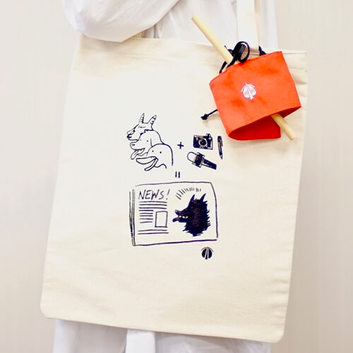

定期定額 司改不孤單
每月 $500

定期定額每月500元，捐一年或一年以上。獨家製作飲料提袋*1（隨機寄送不挑色）
每月 $948

定期定額每月948元，捐一年或一年以上。帆布袋＋飲料提袋＋竹吸管組合包
期待有一天⋯⋯
守法的人不孤單，違法的人心有畏懼，每一個人皆能得到心中的正義；期待有一天⋯⋯
司法能成為我們共同的許諾，許諾一個公平的審判，一個平等的文化，一個體現正義的社會。
民間司改會今年邁入第23年了，我們始終堅持在司法改革捨我其誰的崗位上，由下而上推動法案、監督評鑑不適任的法官檢察官，以及救援冤案。
我們也深知唯有落實法治教育，才是司法改革的基石，我們與全台各縣市校園合作，將模擬法庭活動帶入班級，每年暑期為學生舉辦法律營隊。在今年，我們製作專題影音、經營網路社群，希望能讓更多民眾認識、理解司法議題。
司法改革需要你的支持，每一個你，都是司法改革的種子。
定期定額每月500元，捐一年或一年以上。獨家製作飲料提袋*1（隨機寄送不挑色）
定期定額每月948元，捐一年或一年以上。帆布袋＋飲料提袋＋竹吸管組合包
 捲起收納後，可利用提繩將杯套掛於包包、提袋。
捲起收納後，可利用提繩將杯套掛於包包、提袋。
 依飲料杯身調整寬度，繩子繞過銅釦，將繩子打結處塞入繫繩與布之間與固定後使用。
依飲料杯身調整寬度，繩子繞過銅釦，將繩子打結處塞入繫繩與布之間與固定後使用。
 刺繡logo不擔心退色。
刺繡logo不擔心退色。
自然取材，回歸自然。（不附吸管刷）
※ 保養方式：使用後清洗晾乾，定期以沸水蒸煮。
手做絹印，A4原色帆布袋，落實偵查不公開，也落實塑膠袋減量。